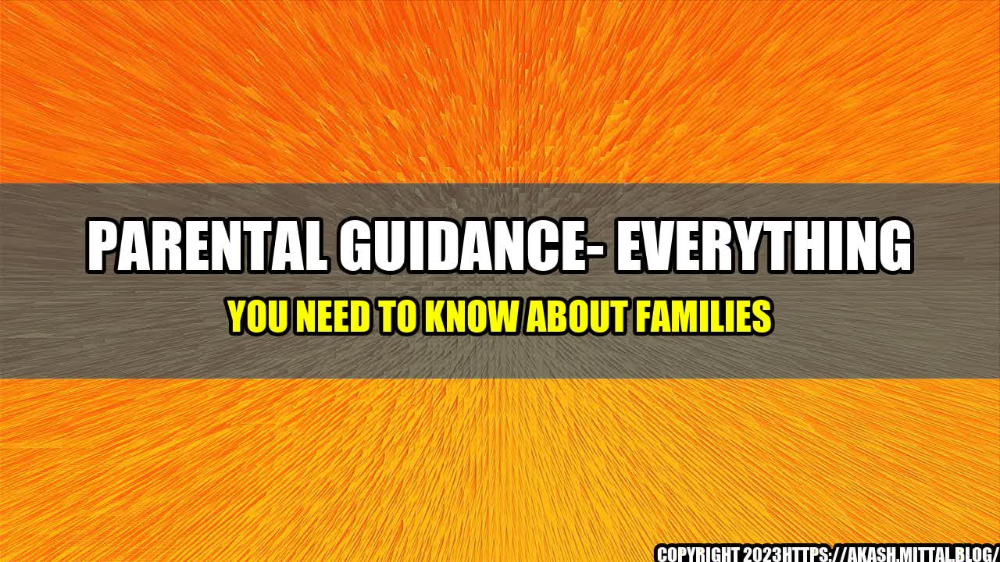

Parental Guidance- Everything you need to know about families

Family is an institution that has been around for centuries. It provides individuals with emotional, social, and economic support. Every family has its unique dynamics, and its members have diverse needs. However, there are some common issues that every family faces, and this article aims to shed light on those issues.
An interesting story:
Once upon a time, there was a young couple who had just become parents. They were overwhelmed with the sudden responsibility of raising a child. They had no experience, and they were afraid they might make mistakes. One day, while they were discussing their concerns, an elderly couple overheard them. The elderly couple offered to mentor them and share their wisdom. With the help of these mentors, the young parents were able to navigate the challenges of parenthood successfully.
Quantifiable Examples:
- The divorce rate in the US for first marriages is around 39%, and it increases to 60% for second marriages.
- According to the 2019 American Community Survey, the average household size in the US is 2.6 persons.
- Studies show that families who eat together have better communication, lower rates of substance abuse, and better mental health.
Eye-catching The Modern Family- Navigating the Challenges of Parenthood
:
When I became a parent, I was surprised by how much my life changed. Suddenly, my priorities shifted, and my focus was entirely on my child's well-being. I struggled with balancing work and family, and I often felt guilty about not spending enough time with my child. However, with the help of my spouse and extended family, I learned to manage my time better, and I was able to find a healthy balance.
Conclusion:
- Communication is critical in every family. Parents must be open and honest with each other and their children. This creates a safe and supportive environment for everyone.
- Maintaining a healthy work-life balance is essential. Parents must prioritize their families' needs and take time to bond and create memories together.
- Parenting is a learning experience. No one knows everything, and it's okay to seek help and advice from others.
Practical Tips:
- Set aside time for regular family meals and rituals.
- Create a family calendar to keep track of everyone's schedules and commitments.
- Don't compare yourself to other families. Every family is unique, and what works for one may not work for another.
- Don't be afraid to seek help from family, friends, or professionals.
References:
- https://www.census.gov/quickfacts/fact/table/US/PST045219
- https://www.apa.org/monitor/2019/11/holiday-family
- https://www.psychologytoday.com/us/blog/the-athletes-way/201402/family-dinners-are-important-the-holidays-and-every-day
Hashtags:
- #families
- #parenthood
- #familydynamics
- #worklifebalance
- #parentingtips
Category:
Family and Parenting
Curated by Team Akash.Mittal.Blog
Share on Twitter Share on LinkedIn